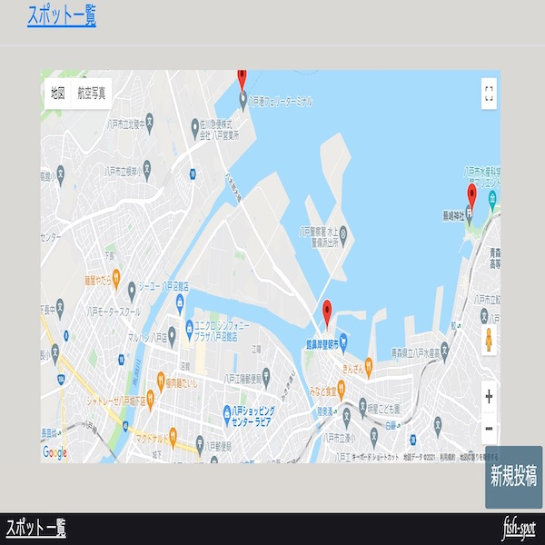
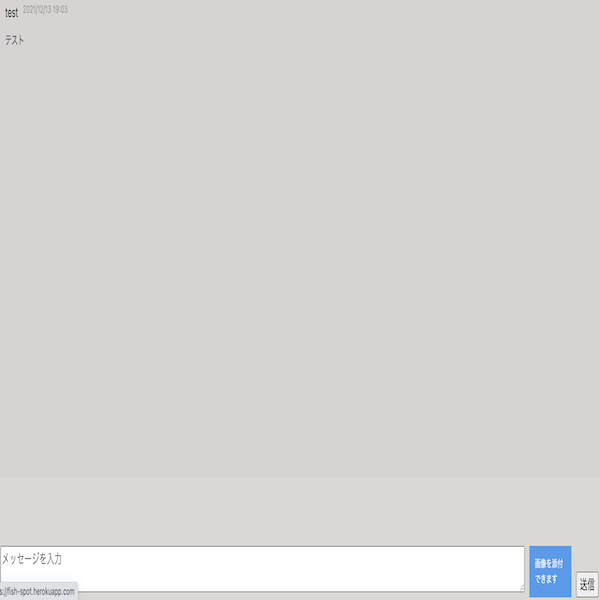

fish-spot（情報共有ツール）
開発環境
Ruby / Ruby on Rails / MySQL / GitHub / Heroku / Visual Studio Code
-
概要
制作時間 120時間 URL https://fish-spot.herokuapp.com ID tatsuya PASS 12345 -
動作テスト
テスト用アカウント
mail sample@com PASS aa0000
OUTLINEアプリケーションの概要
オリジナルアプリケーションとして、釣りスポットを共有できる情報共有ツールを開発しました。
主な機能は、ユーザー登録機能、新規投稿（スポット登録）機能、地図機能、チャット機能です。
トップページにアクセスすると、イメージ写真・特徴説明・最新の投稿2つ・地図表示がされます。また投稿一覧があり押すと投稿一覧ページへ遷移します。投稿をクリックすると詳細ページへ遷移します。
ユーザー登録をすると、投稿詳細ページからチャットルームへ入室できるようになります。チャットルームではメッセージ送信をする事により情報の共有ができます。
-
開発に至った経緯
友人からヒアリングを行い、八戸では釣りの情報を共有できるアプリケーションがなく、釣りで重要な事は魚が集まる時間や釣れる場所（スポット）選びであり、狙い目の時間はその日の天候や時期によって様々です。
そこでよく釣れる場所（スポット）を共有でき、実際その場所に魚が集まっているか状況をスピーディーに共有できるようしようと思い今回のアプリケーションを開発しました。
-
開発で工夫したこと
新規投稿時に場所の情報だけでなく仕掛けや漁れる魚の種類等の情報を登録できるようにしました。
スポットの情報が一目でわかるようにトップページ下部に地図を表示しています。マーカー部分をクリックすると情報ウィンドウが開き「詳細はこちら」を押すと詳細ページへ遷移します。
-
今後実装したいと思っていること
可読性を上げるためチャットルーム内でのメッセージのやり取りをLINEのように送信者が右側、自分以外は左側へ寄せられるようにしたいと考えています。
釣れている情報をよりスピーディーに行うため、チャットルーム内で「今釣れている」ボタンもしくはメッセージ内容を登録のメールアドレスに通知する機能を実装しようと考えています。
お気に入りボタンを作り自身の好きなスポットを登録できるようにし、メール通知をお気に入り登録されているものだけにするようにしたいと考えています。
マイページ機能を作り、自身の投稿・お気に入りの情報を見れるようにする事やメール通知等の設定を名ページで出来るようしたいと考えています。